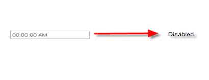
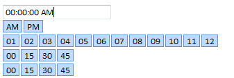

The following section details the client-side methods supported by the TimePicker control.
Client-Side Methods
|
Name |
Type |
Description |
|
Disable()
|
Void |
Used to set the TimePicker control in read-only mode. |
|
Enable()
|
Void
|
Used to enable the TimePicker control in active mode for user interaction. |
|
Open()
|
Void
|
Used to show the TimePicker control navigator. |
|
Close() |
Void |
Used to hide the TimePicker control navigator. |
Using Builder
The following steps will guide you in handling client-side methods through Builder.
1. In the view, invoke the TimePicker helper with the time picker ID as the first argument.
|
[ASPX]
<%= Html.Syncfusion().TimePicker("TimePicker") %> |
|
[Razor] @(Html.Syncfusion().TimePicker("TimePicker"))
|
2. In JavaScript, use the following methods.
|
[Javascript]
<script type="text/javascript"> function DisableTimePicker() { //Code to disable TimePicker control $find("TimePicker ").Disable(); } function EnableTimePicker() { //Code to Enable TimePicker control $find("TimePicker ").Enable(); } function OpenTimePicker() { //Code to Open TimePicker control $find("TimePicker ").Open(); } function CloseTimePicker() { //Code to Close TimePicker control $find("TimePicker ").Close(); }
</script> |
Using Properties Model
The following steps will guide you in handling client-side methods through the properties model.
1. In the controller, create an instance of TimePickerModel and pass the instance through view-specific data to the view as given below.
|
Controller
public ActionResult Index() { TimePickerModel myModel = new TimePickerModel(); ViewData["myModel"] = myModel; return View(); }
|
|
[ASPX]
<%=Html.Syncfusion().TimePicker("TimePicker",(TimePickerModel)ViewData["myModel"]) %> |
2. In JavaScript, use the following methods.
|
[JavaScript]
<script type="text/javascript"> function DisableTimePicker() { //Code to disable TimePicker control $find("TimePicker ").Disable(); } function EnableTimePicker() { //Code to Enable TimePicker control $find("TimePicker ").Enable(); } function OpenTimePicker() { //Code to Open TimePicker control $find("TimePicker ").Open(); } function CloseTimePicker() { //Code to Close TimePicker control $find("TimePicker ").Close(); } </script> |
3. Run the application.
The output for the disabled state of the TimePicker control is shown below.

Figure 289: TimePicker in Disabled State
The output for the enabled state of the TimePicker control is shown below.
Figure 290: TimePicker in Enabled State
The outputs for the open and closed states of the TimePicker control are shown below.

Figure 291: Time Picker in Open State
Figure 292: TimePicker in Closed State